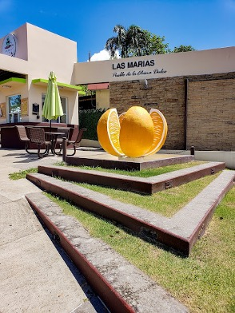
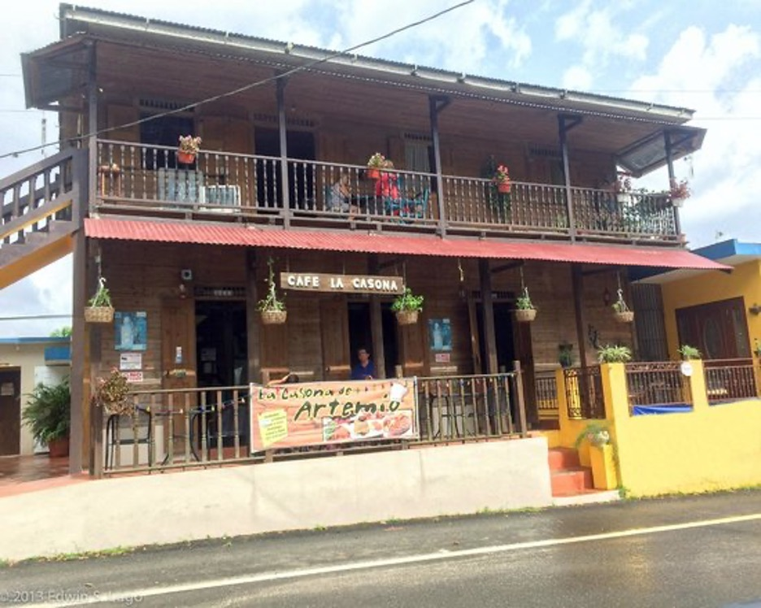
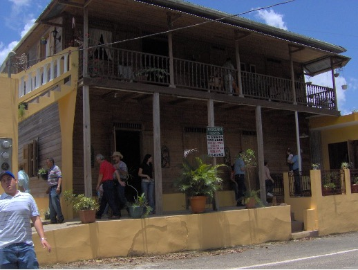

Monumento de la China Dulce
A Las Marías se le conoce como el pueblo del a china y aquí se celebra el hermoso festival de la china. Por tanto se levantó este monumento para el deleite de todos sus visitantes.
- Dirección: 7223+VW, Las Marias, Las Marías 00685
Centro de Bellas Artes Las Marías

Hermoso centro de Actividades en el Pueblo Las Marías, para el disfrute de todos sus visitantes.
Pueden visitar en:
- Dirección: 6XRM+V65, PR-119, Las Marías 00670
La casona de Artemio
En La Casona de Artemio hay una experiencia de agroturismo que te mostrará el proceso completo para transformar los pequeños frutos rojos de un árbol en una taza de café.
Pueden visitar en:
- Dirección: PR-408, Las Marías, 00670
Hacienda Palma Escrita
Una de las haciendas más antiguas de la isla que data de hace más de un siglo y ha sobrevivido desde que la industria del café fue uno de los principales productos agrícolas de Puerto Rico. También hay un restaurante en el lugar que sirve cocina tradicional puertorriqueña.
Pueden visitar en:
- Dirección: 627F+M7H, PR-408, Las Marías 00670